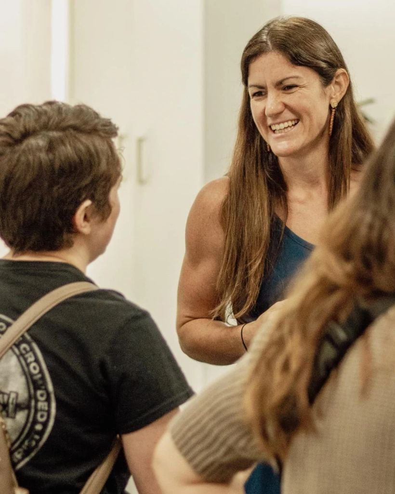
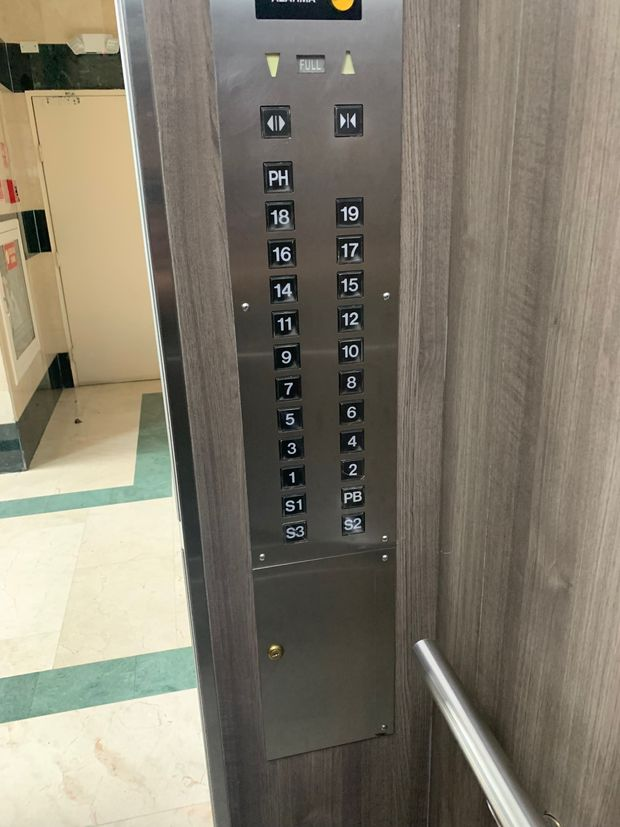

What your first Sunday will actually be like.
Nothing to sign up for, nothing to bring, nobody to tell. Walk in, take the elevator to Floor 2, and find a seat.

- Next service
- 10:00 AMEvery Sunday, at the World Trade Center
- How long
- 90 minutesAbout the same shape every week
- Where
- World Trade CenterCalle 53 Este, Marbella
Take the lobby elevator to Floor 2.
Finding us in the building
Four photos, from the street to our doors.

Enter from Calle 53 Este

Elevators are on the right

Press 2

Our doors, straight ahead
Driving, or coming by taxi?
- Floor 2
LifeBridge
Our doors are straight ahead as you step out of the elevator.
- Street level, Calle 53 Este
Surface lot
In front of the building, off Calle 53 Este.
Taxi or rideshare
Ask to be dropped at the World Trade Center main entrance.
- Underneath the building
Garage
Park below and take the elevator up to Floor 2.
The morning, start to finish
About 90 minutes, the same shape every week.
- 9:45 AM
Arrive and find a seat
- 10:00 AM
The service starts with music
- Announcements
Kids 4 to 11 head to BridgeKids
- Then
A message from the Bible
- After
Coffee and conversation. Stay or head out.
★★★★★“As visitors we felt very welcome.”
Questions people ask before they come
Anything else? Ask anyone on Sunday.
What should I wear?
Whatever you’re comfortable in. On any given Sunday you’ll see shorts and sandals next to button-down shirts. Nobody is checking.
Will I have to introduce myself?
No. There’s no moment where visitors are asked to stand, raise a hand, or fill out a card.
What if I don’t know anyone?
There’s coffee before and after, and people stay and talk. That’s where most people meet someone.
What happens with my kids?
Kids ages 4 to 11 sit in the service with you, then are dismissed together during the announcements to BridgeKids, in a room just for kids at the back. It’s optional, so they can stay with you if they’d rather. Under 4s stay with you.
Is the whole service in English?
Yes. The entire service is in English. There’s no Spanish portion and no translation.
Am I expected to give?
No. An offering is taken during the service; visitors aren’t expected to give.
What if I’m not sure what I believe?
That’s fine, and you won’t be the only one. Some people here have believed this their whole lives. Some are working out whether they believe any of it.
Not ready to come in person? Watch a message first.
The most recent Sunday message, start to finish. Nothing to sign up for.
All past messages on YouTube